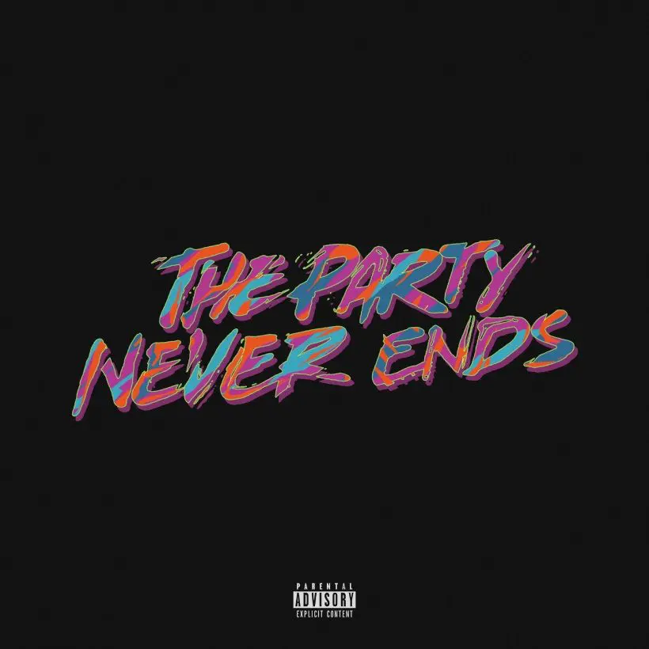

Fun Facts

GBGR

DRFL

WOD

TPNE
Juice WRLD
Juice WRLD, mit bürgerlichem Namen Jarad Anthony Higgins, war ein amerikanischer Rapper und Sänger, der für seine einzigartige Verschmelzung von Rap und Emo-Musik bekannt war. Sein impulsiver, improvisierter Stil und ehrliche Texte über emotionale Herausforderungen machten ihn zu einem herausragenden Künstler der SoundCloud-Generation.